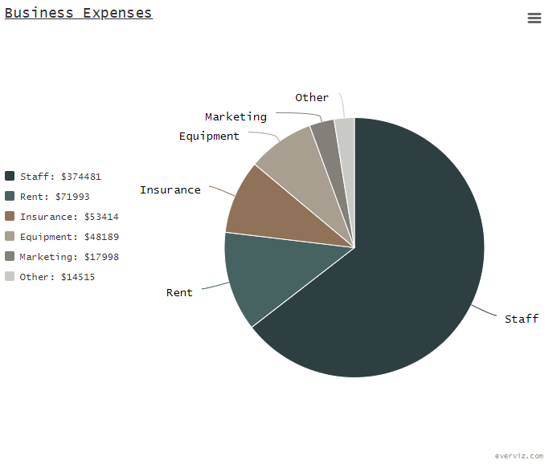

Retrospective
Overview
Reflect on past work and identify opportunities for improvement by following the instructions for the Retrospective Play.
| Date | |
|---|---|
| Team | |
| Participants |
Retrospective
Add your Start doing, Stop doing, and Keep doing items to the table below. We'll use these to talk about how we can improve our process going forward.
| Start doing | Stop doing | Keep doing |
|---|---|---|
| * | * | * |
Action items
